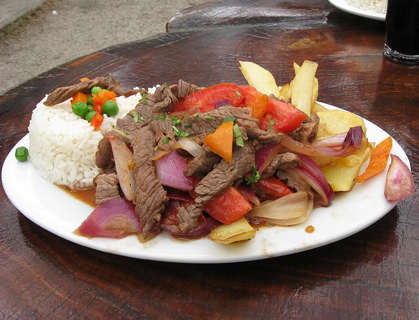

Lomo Saltodo

Today we will be learning how to successfully prepare Lomo Saltodo,
a traditional Peruvian dish. It is relatively simple to make this dish so
let's begin!
Ingredients
- 1lb sirloin steak (cut in thin strips)
- 1 red onion (cut in thick slices)
- 2 red tomatoes (cut in thick slices)
- 1tblsp aji amarillo paste
- 2 cloves garlic (crushed)
- 3tblsp vegetable oil
- 3tblsp soy sauce
- 3tblsp red wine vinegar
- 1/2 cup cilantro (finely chopped)
- salt
- pepper
- 2 cups french fries
- white rice
Directions
- Marinate steak strips in soy sauce, red wine vingegar, salt and pepper
for about 15 minutes.
- In a wok on very high heat, add oil and saute meat for about 10 minutes.Set marinade aside.
- Add garlic, onion, aji amarillo paste and stir for a couple minutes.DO NOT add tomatoes at this time.
- Add marinade and begin mixing with other ingredients already in wok, add tomatoes at this time.
- Take off heat. Serve with rice and french fries and freshly chopped cilantro. Enjoy!
Contact Me
Feel free to contact me with any questions about the recipe. Please share
your cooking experience with this dish and let me know how it turns out!
The University of Montana
32 Campus Dr
Missoula, MT 59812
Email Me!
To Other Versions of This Recipe!